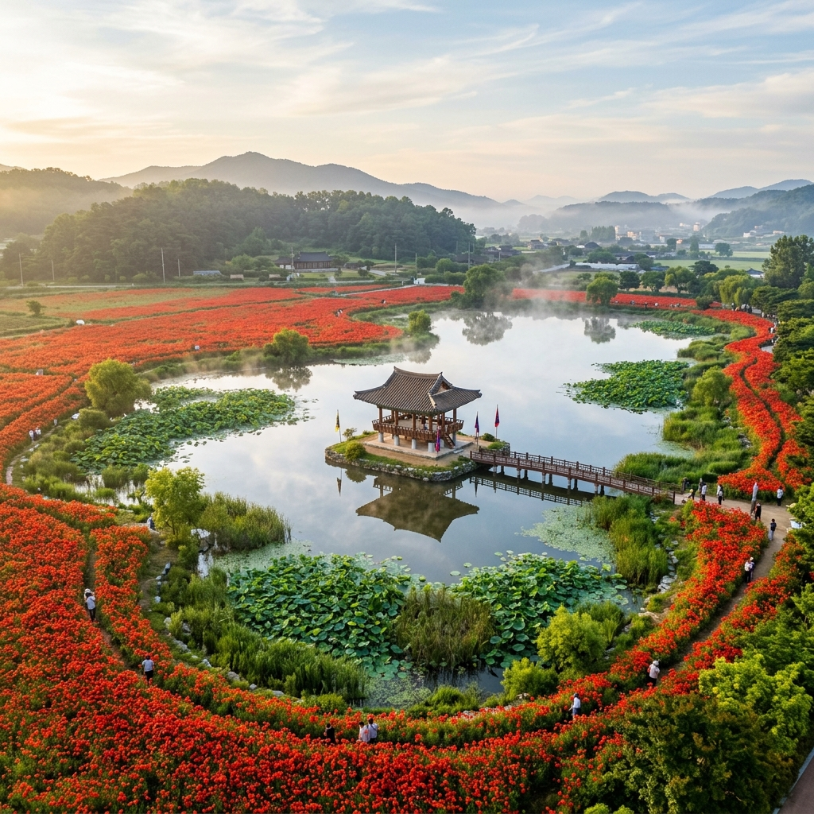
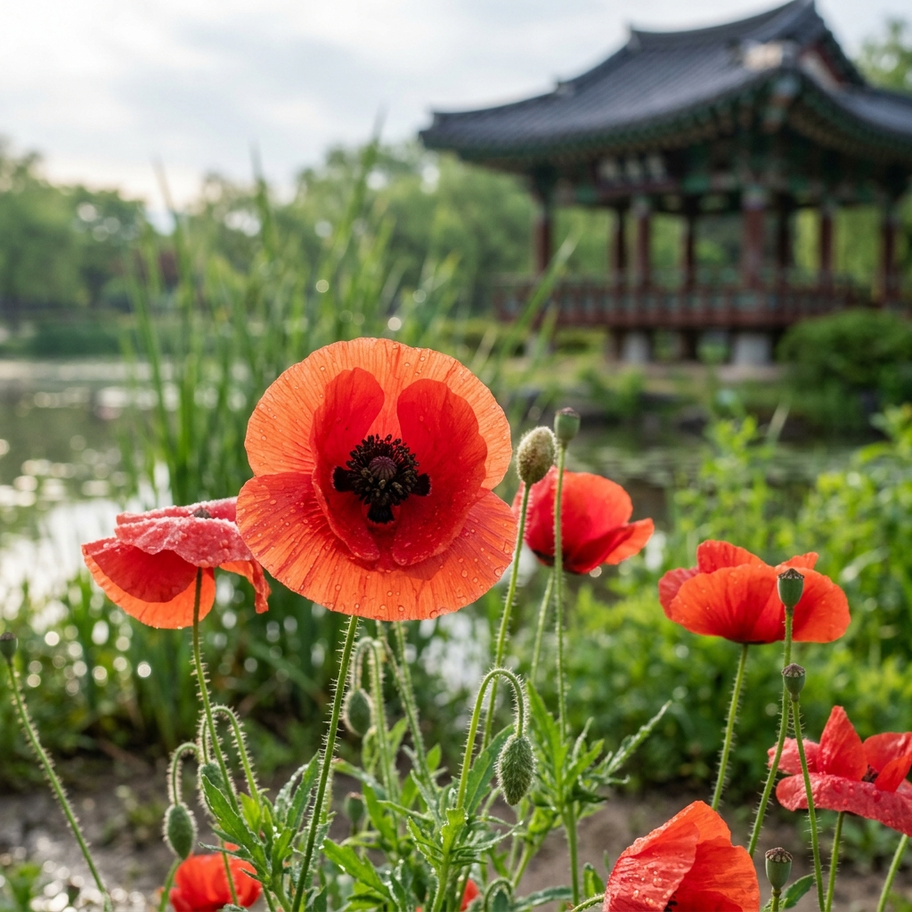
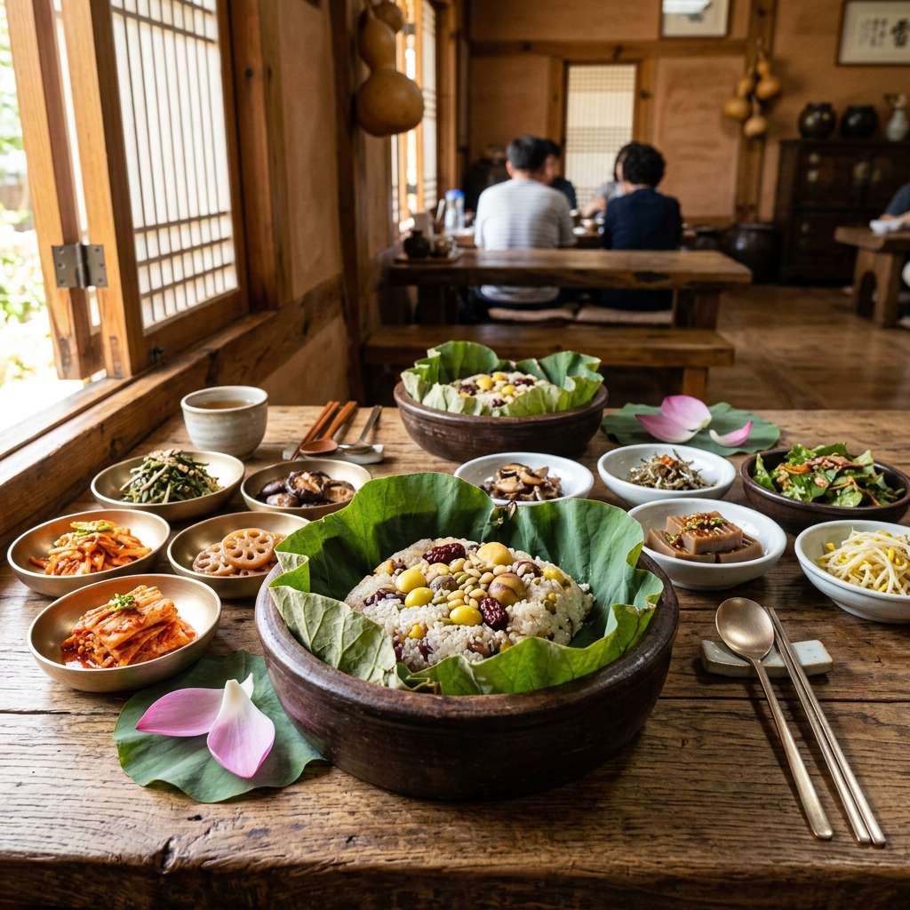

부여 궁남지 양귀비 2026 — 백제의 연못에서 피어나는 붉은 물결 명당 가이드
충남 부여군 궁남지에 매년 5월 말이 되면 붉고 화사한 양귀비꽃이 만개합니다. 백제 무왕과 서동요의 전설이 깃든 1,400년 역사의 인공 연못가를 따라 펼쳐지는 양귀비 군락은, 인생샷 명소로 알려진 7월 연꽃 시즌 이전에 찾아오는 가장 화려한 봄의 선물입니다. 입장료 무료에 대중교통 접근까지 가능한 궁남지 양귀비, 2026년 완벽 방문 가이드를 지금 바로 확인하세요.
01. 궁남지란? — 백제 무왕의 사랑이 담긴 1,400년 연못
궁남지(宮南池)는 충청남도 부여군 부여읍 동남리에 자리한 우리나라 최고(最古)의 인공 정원 연못입니다. 삼국사기에 따르면 서기 634년 백제 무왕 35년에 조성된 것으로, "궁 남쪽에 못을 파 물을 20여 리 밖에서 끌어들였다"고 기록되어 있습니다.
이 못은 단순한 조경 시설이 아닙니다. 백제 무왕의 아명인 '서동'과 신라 선화공주의 아름다운 사랑 이야기, 즉 '서동요'의 배경이 되는 곳으로 전해집니다. 현재 부여군은 이 서동 설화를 바탕으로 매년 10월 서동연꽃축제(사실 9월~10월 국화축제로 이어지는 백제문화제)를 개최하고 있습니다.
궁남지는 약 4만 5천 평(149,303㎡)에 달하는 광활한 면적을 자랑하며, 중앙에는 자연스럽게 심어진 포룡정 정자가 그림처럼 떠 있습니다. 7월이면 만개하는 연꽃으로 전국에서 수만 명의 방문객이 찾아오지만, 연꽃 시즌에 앞서 5월 말에 피어나는 양귀비(개양귀비, Papaver rhoeas)는 그야말로 '숨겨진 주인공'입니다.
포룡정을 배경으로 붉은 양귀비 물결이 펼쳐지는 풍경은, 어떤 카메라로 찍어도 그림 엽서 같은 사진이 완성됩니다. 평일 이른 아침이면 안개와 함께 더욱 몽환적인 분위기를 자아냅니다.

[궁남지 포룡정과 양귀비 전경] / AI 생성 이미지
02. 2026년 양귀비 개화 예측 — 언제 가야 절정일까?
궁남지 일원에서 자라는 양귀비(개양귀비)의 개화 시기는 일반적으로 5월 중순부터 시작해 5월 말~6월 초에 절정을 이룹니다. 기온 변화에 따라 다소 차이가 있지만, 2026년 충청남도의 봄 기온이 평년 대비 약 0.5~1℃ 높게 유지될 것으로 예상되는 점을 감안하면, 5월 22일(금)~6월 2일(월) 사이가 가장 화려한 개화 절정기가 될 가능성이 높습니다.
개양귀비는 일조량과 기온에 민감하게 반응합니다. 맑고 따뜻한 날이 3~4일 연속되면 꽃이 급격히 개화하며, 오후 늦게나 흐린 날에는 꽃잎을 오므리는 특성이 있습니다. 따라서 맑은 날 오전 9시~11시가 최상의 개화 상태를 볼 수 있는 황금 시간대입니다.
| 구분 | 예상 일정 | 비고 |
|---|
| 개화 시작 | 2026년 5월 14일 전후 | 소량 개화, 군락 미형성 |
| 준절정 | 2026년 5월 18~21일 | 절반 이상 개화 |
| 절정 (추천) | 2026년 5월 22일~6월 2일 | 최대 개화, 색감 최우수 |
| 낙화 시작 | 2026년 6월 3일 전후 | 연꽃 개화 준비 시작 |
방문 전 날씨 예보를 반드시 확인하세요. 비 온 다음 날 맑은 아침이라면 빗방울이 꽃잎에 맺혀 더욱 영롱한 장면을 연출합니다. 기상청 공식 날씨 앱을 통해 부여군의 5일 예보를 확인하는 것을 권장합니다.
03. 궁남지 양귀비 군락 위치 & 포토 명당
궁남지 전체 면적 중 양귀비가 집중적으로 군락을 이루는 곳은 크게 두 군데입니다.
① 동문 입구 북쪽 화단 구역: 궁남지 동쪽 출입구(주차장에서 가장 가까운 입구)로 들어서면 오른편으로 길게 펼쳐진 화단이 있습니다. 이곳이 가장 넓은 양귀비 군락지로, 포룡정 정자를 배경으로 한 대표 인생샷 구도를 잡을 수 있는 1번 포인트입니다.
② 서문 방향 연꽃길 옆 야생화 구역: 서쪽 연꽃 산책길을 따라 걷다 보면 갈대숲 사이사이로 야생화처럼 자란 양귀비 군락을 만납니다. 인위적으로 조성된 화단과 달리 자연스럽게 흩어진 분포로, 보다 감성적인 구도가 가능한 2번 포인트입니다.
포토 팁을 하나 드리자면, 로우앵글(낮은 각도)로 양귀비꽃과 포룡정이 동시에 프레임에 들어오도록 구도를 잡아보세요. 스마트폰의 경우 화면 비율을 1:1이나 4:3으로 설정하고, '그리드(격자선)' 기능을 켠 뒤 꽃 무더기를 화면 하단 1/3에, 정자와 하늘을 상단 2/3에 배치하면 안정적이고 아름다운 구도가 완성됩니다.

[양귀비 로우앵글 접사 명당 컷] / AI 생성 이미지
04. 궁남지 기본 정보 — 입장료·주차·운영 시간
궁남지는 연중무휴, 24시간 개방되며 입장료는 무료입니다. 단, 포룡정 정자 내부나 특별 행사 구역은 별도 요금이 발생할 수 있으나 양귀비 감상에는 일체 비용이 들지 않습니다.
| 항목 | 내용 |
|---|
| 주소 | 충청남도 부여군 부여읍 동남리 117 |
| 입장료 | 무료 (연중 상시 개방) |
| 주차장 | 궁남지 동문 공용 주차장 (무료, 약 200대) |
| 운영 시간 | 연중무휴 24시간 (단, 야간은 조명 없음) |
| 화장실 | 동문 입구 및 서문 인근 공중화장실 완비 |
| 대중교통 | 부여버스터미널에서 도보 약 15분 또는 택시 5분 |
| 반려동물 | 목줄 착용 시 입장 가능 (배변봉투 필참) |
주차의 경우 주말 오전 9시 이후에는 동문 앞 공용 주차장이 빠르게 채워집니다. 도보 5분 거리의 부여군청 주차장을 이용하거나, 오전 8시 30분 이전 조기 방문을 강력 추천합니다. 평일 방문 시에는 주차 걱정이 거의 없습니다.
05. 정림사지 & 부소산성 연계 당일 코스
궁남지에서 약 1km 이내에 부여의 핵심 명소들이 밀집해 있어, 반나절이면 알차게 둘러볼 수 있습니다.
추천 당일 코스 (약 5시간)
🚗 도착 → 🌸 궁남지 양귀비 감상 (1시간) → 🏛️ 정림사지 5층 석탑 (30분) → 🏰 부소산성 & 낙화암 (1.5시간) → 🍜 부여 시내 점심 식사 (1시간) → 🛍️ 부여 읍내 산책 & 귀가
정림사지(定林寺址)는 백제 사비 시대의 사찰 터로, 유네스코 세계유산으로 등재된 정림사지 5층 석탑(국보 제9호)이 있습니다. 궁남지에서 도보 약 10분 거리로, 양귀비 감상 후 걸어서 이동하기에 딱 좋습니다. 석탑 주변의 신록과 봄꽃이 어우러진 모습도 사진 찍기에 그만입니다.
부소산성과 그 안의 낙화암은 백제 최후의 날을 기억하는 역사의 현장입니다. "꽃잎처럼 강물에 몸을 던진 삼천 궁녀"의 전설이 깃든 낙화암에서 백마강을 굽어보는 경치는 감동 그 자체입니다. 부소산성 내 황토 산책로를 따라 1시간 남짓 트레킹하면 부여의 깊은 역사를 온몸으로 느낄 수 있습니다.
06. 부여 대표 맛집 — 점심은 어디서?
부여 시내는 작은 도시지만 의외로 개성 있는 식당이 많습니다.
연꽃잎 쌈밥은 부여에서만 맛볼 수 있는 별미입니다. 연꽃잎 특유의 향긋한 향이 밥에 배어들어 밥 한 그릇이 금세 비워집니다. 궁남지 인근 '부여 연꽃 쌈밥 식당' 골목에서 여러 집을 비교해보세요.
부여 애호박 국수도 이 지역의 숨겨진 명물입니다. 충청도 특유의 구수하고 담백한 장국에 쫄깃한 칼국수 면발, 거기에 애호박과 된장이 어우러진 맛은 도시에서는 절대 맛볼 수 없는 시골 외할머니 집 밥상 같은 따뜻함이 있습니다. 부여읍내 전통시장 인근 작은 식당들을 탐방해보세요.
삼충사 인근 한정식집들은 백반 형태로 다양한 충청도 밑반찬을 제공하며, 1인당 1만 원 내외로 합리적입니다. 방문 전 네이버 지도에서 "부여 한정식"으로 검색해 최근 리뷰가 많은 곳을 선택하시길 권장합니다.

[부여 연꽃잎 쌈밥 대표 메뉴] / AI 생성 이미지
07. 방문 준비물 & 베스트 방문 시간대
궁남지 양귀비 방문 시 챙겨가야 할 준비물을 정리했습니다.
✅ 필수 준비물: 운동화 또는 트레킹화 (비포장 산책로), 자외선 차단제 (햇빛 강함), 모자, 물 1L 이상, 카메라 또는 스마트폰 충전 완료
✅ 사진 장비 팁: 반사판 역할을 하는 흰 종이 또는 소형 반사판을 가져가면 꽃 접사 시 그림자 제거에 유용합니다. 광각 렌즈보다 85mm~135mm 망원 렌즈가 배경 흐림(보케)을 살린 아름다운 꽃 사진에 적합합니다.
✅ 복장 팁: 붉은 양귀비와 보색 대비가 되는 흰색, 민트색, 연두색 계열 의상이 인물 사진에서 가장 두드러집니다.
최적 방문 시간대는 해가 동쪽에서 45도 각도로 떠오르는 오전 7시 30분~10시입니다. 이 시간대에는 빛이 부드럽고 포룡정 방향으로 역광을 피할 수 있어 사진 퀄리티가 최고조에 달합니다. 오후 방문은 피하는 것이 좋습니다. 오후 2~4시에는 강한 직광으로 꽃잎의 섬세한 질감이 날아가고, 양귀비꽃도 꽃잎을 오므리기 시작하기 때문입니다.
08. 2026년 부여 주변 함께 즐길 만한 봄꽃 정보
궁남지 방문과 함께 부여 근교의 봄꽃 정보도 챙겨가시면 더욱 풍성한 여행이 됩니다.
부여 서천 장미 공원 (5월 말~6월 초): 궁남지에서 차로 약 30분 거리인 서천군에서는 5월 말부터 장미 공원이 절정을 이룹니다. 양귀비 감상 후 서천 장미 공원까지 이어지는 충남 서해안 드라이브 코스는 당일치기로도 충분히 소화 가능합니다.
공주 마곡사 (연중): 충남의 대표 사찰인 마곡사도 5월에는 신록이 절정을 이루며 산사의 고즈넉한 분위기를 한껏 즐길 수 있습니다. 부여에서 차로 약 40분 거리입니다.
⚠️ 주의사항: 궁남지 내 양귀비 꽃은 관상용 개양귀비(학명: Papaver rhoeas)로, 마약 성분이 없는 합법적인 관상 식물입니다. 단, 꽃을 꺾거나 채취하는 행위는 부여군 조례상 금지되어 있으며, 관리인이 상주합니다.
09. 교통 정보 총정리 — 자가용·대중교통 모두 OK
부여는 수도권에서 약 2시간 거리로, 당일치기 여행이 충분히 가능합니다.
자가용 이용 시: 서울 강남 → 경부고속도로 → 논산천안고속도로 → 서천공주고속도로 → 부여 IC 하차 후 약 10분. 네비게이션에 '궁남지 주차장' 또는 '충청남도 부여군 부여읍 동남리 117'을 입력하세요.
대중교통 이용 시: 서울 센트럴시티(강남) 또는 동서울버스터미널에서 부여행 시외버스가 1시간 간격으로 운행됩니다. 소요 시간은 약 2시간~2시간 20분이며, 부여버스터미널 도착 후 도보(15분) 또는 택시(기본요금, 약 5분)로 이동합니다.
KTX 연계 이용 시: 서울 용산역 → KTX 논산역 하차(약 50분) → 부여행 시내버스 또는 택시로 약 30분 추가. 버스보다 빠르나 가격이 상대적으로 높습니다.
10. 인생샷을 위한 특별 구도 4가지
인스타그램과 블로그에서 가장 많이 반응 받는 궁남지 양귀비 사진 구도를 공개합니다.
구도 1 — 포룡정 반영 컷: 연못 수면에 정자가 반영되는 지점에 서서 양귀비를 전경으로 배치합니다. 흔들림 없는 수면이 필요하므로 바람 없는 이른 아침이 최적입니다.
구도 2 — 꽃 터널 컷: 양귀비 군락 사이로 좁은 흙길이 있다면 그 사이로 들어가 양쪽에서 꽃이 쏟아지는 터널 구도를 잡습니다. 중앙에 인물을 배치하면 영화 속 한 장면 같은 사진이 나옵니다.
구도 3 — 역광 실루엣 컷: 해가 정면에 있을 때 양귀비 꽃잎을 카메라와 태양 사이에 두면, 얇은 꽃잎이 빛을 투과시켜 마치 스테인드글라스처럼 빛나는 환상적인 사진이 완성됩니다. 노출 보정을 +1~+2로 높이세요.
구도 4 — 벌·나비 포함 생태 컷: 양귀비 절정기에는 꿀벌과 나비가 끊임없이 날아듭니다. 연속 촬영 모드로 꽃 위에 앉은 나비를 포착하면 자연 다큐멘터리 같은 생동감 넘치는 사진을 건질 수 있습니다.
#부여궁남지
#양귀비2026
#충남여행
#부여여행
#궁남지양귀비
#5월봄꽃
#개양귀비
#인생샷명소
#당일치기여행
#백제역사여행